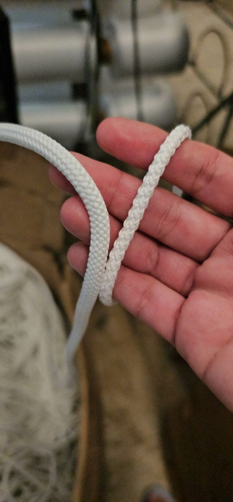
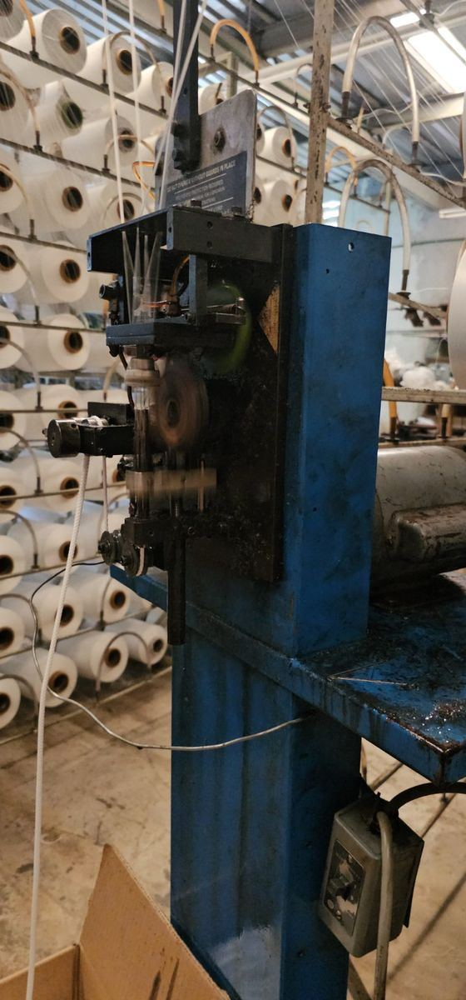

Un disparo entra a la portería y el balón atraviesa la red. Pasa hasta en partidos profesionales. Pero ver la red rota no dice la causa: puede ser desgaste, un daño previo, una mala fijación o una red que ya perdió resistencia.
Una red puede seguir colgada y conservar su forma aunque ya no aguante los balonazos como cuando era nueva. Por eso, para decidir cuándo cambiarla, hay que ver el material, el sol que recibe y el uso, no solo su apariencia.
Nuestra referencia: tres años en condiciones exigentes
En Grupo RC fabricamos las redes para portería de poliéster 100 %, con cordón de 60 filamentos y tejido hexagonal. Por nuestra experiencia fabricando y atendiendo clientes, manejamos una vida útil de alrededor de tres años con uso deportivo intenso y expuestas todo el tiempo al sol y a la lluvia.
Eso no quiere decir que al cumplir tres años la red se caiga. Quiere decir que se vuelve más vulnerable a los impactos y puede empezar a fallar.
En esas condiciones recomendamos el cambio preventivo cada tres años, aunque la red todavía se vea bien. Si se daña antes, no hay que esperar.
En una cancha techada el criterio cambia
Una red bajo techo que no recibe sol directo, o que se usa de vez en cuando y se guarda entre sesiones, no sufre lo mismo. Ahí el momento del cambio depende de su historial y su estado. No prometemos años extra: recomendamos revisarla y consultarnos.

Poliéster, polipropileno y polietileno: ¿son iguales?
No. El poliéster es conocido por su buen comportamiento frente al sol y al roce, aunque cualquier fibra sintética se deteriora con la radiación UV. El polipropileno común suele resistir menos el sol si no tiene protección, aunque existen versiones estabilizadas.
Tampoco es correcto decir que todo poliéster es mejor que cualquier polietileno: dentro de cada familia hay grados y construcciones distintas. Para comparar redes hay que ver el material, la protección UV, el número y grosor de las fibras, el cordón, el tejido y la confección.
Lo que aprendimos en Grupo RC
Una vez recibimos polipropileno en lugar del material que usábamos. Con ese lote vimos redes que se deshacían, con un desgaste parecido a hacerse polvo, en menos de seis meses. Fue un caso concreto nuestro; no describe a todos los productos de polipropileno.

Con nuestra confección actual de poliéster y el cambio de 40 a 60 filamentos dejamos de ver ese problema en los casos que atendimos. Ojo: tener 60 filamentos no permite decir, por sí solo, que la red sea “50 % más resistente”; es parte de la especificación.
También atendimos a un cliente con una red de solo dos meses de uso cuyo cordón se rompía con la mano. Ese caso muestra lo importante que es revisar la calidad del cordón; no quiere decir que todas las redes económicas duren lo mismo.
¿Por qué no conviene pedir una red más pequeña?
Aprovechar que la red estira para cubrir una portería con una red de menor medida la deja demasiado tensa. En nuestra experiencia, eso castiga el tejido y hace que el balón rebote de más.
Pide una red que corresponda a las medidas y profundidades de tu portería: bien sujeta, con su holgura, sin invadir el espacio del portero ni arrastrarse de más. Si no sabes qué medir, revisa medidas de porterías de fútbol 7, fútbol rápido y fútbol 11.
Cómo ayudar a que dure más
- Menos sol cuando se pueda. Quitar la red entre torneos o entrenamientos reduce su tiempo al sol; requiere trabajo extra y desmontarla sin jalones.
- Guárdala limpia y seca, en un lugar ventilado, sin sol, lejos del calor y de productos químicos.
- Revisa las fijaciones: bordes filosos, rebabas y puntos de roce. Asegura los lados y la parte de abajo para que no queden huecos.
- Nada de cargas ajenas al juego: que nadie se cuelgue, trepe o arrastre la portería con la red.
- Límpiala con cuidado: sin cloro ni solventes. La limpieza no le devuelve resistencia a una fibra dañada.
Más detalles en mantenimiento de redes deportivas.
Señales para cambiarla antes de los tres años
Cordones rotos o deshilachados, zonas quebradizas, uniones abiertas, mallas deformadas y roturas que aparecen una tras otra. Si ves polvo o fibras que se deshacen, hay que revisarla: la causa no se sabe a simple vista.
Si el desgaste está en toda la red, reparar un hueco no rejuvenece el resto. Y no recomendamos “probarla” rompiendo cordones sanos: así solo la dejas inservible.

¿Es gol si el balón atraviesa la red?
En fútbol 11 lo que decide es que todo el balón cruce la línea de meta entre los postes y por debajo del travesaño, sin infracción del equipo que anota. Que se quede dentro de la red no es el requisito del gol. Una red bien ajustada ayuda a contenerlo y evita confusiones.
¿Tu red ya tiene tres años de uso intenso al sol o empieza a romperse? Mándanos sus medidas y fotos y te cotizamos el reemplazo adecuado para tu portería.
Referencias técnicas
- Marlow Ropes: propiedades del poliéster y cuidado de cuerdas sintéticas (exposición UV, abrasión y químicos).
- IFAB, Reglas de Juego: Regla 10, determinación del resultado de un partido (gol marcado).
Las experiencias de fabricación y recomendaciones de RC corresponden al criterio de Reinier Coral.